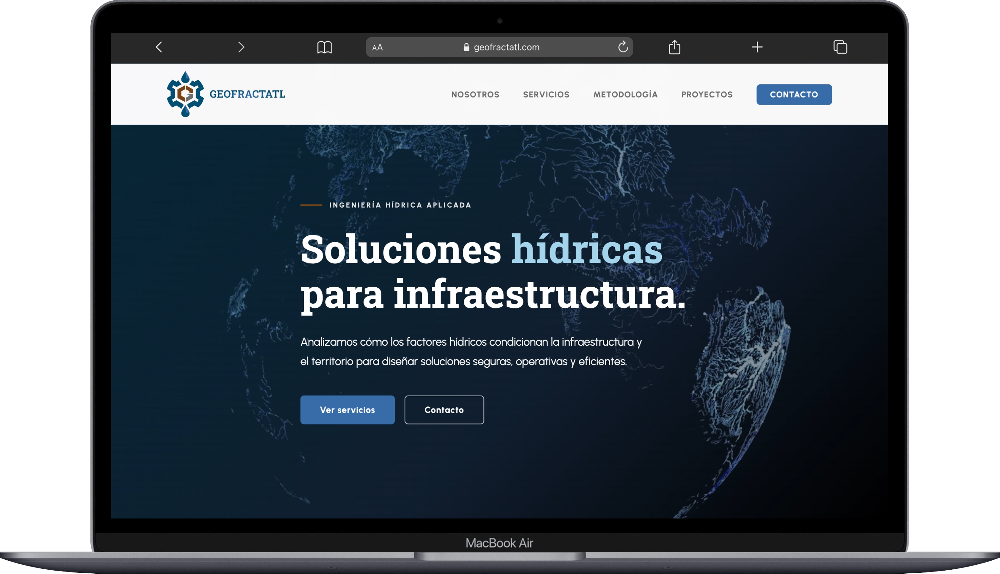
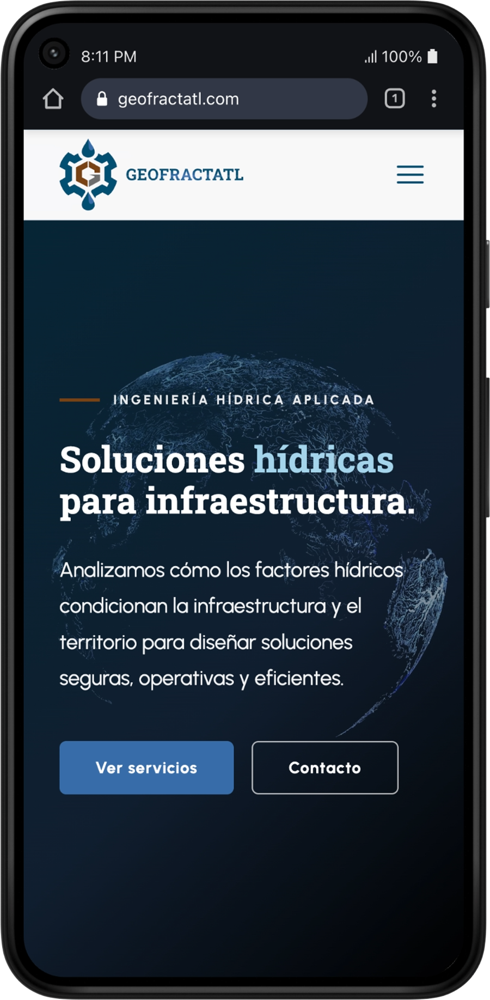

Diseño UI y desarrollo frontend para una consultora de ingeniería en recursos hídricos. Un proyecto enfocado en estructurar y presentar información técnica de manera clara y accesible, optimizando la velocidad y la independencia de la infraestructura.


Geofractatl necesitaba una presencia digital que transmitiera la misma precisión que aplican en sus estudios hidrológicos. Partiendo de una identidad de marca ya definida, mi trabajo consistió en diseñar la interfaz y desarrollar la web desde cero, priorizando la claridad técnica y el rendimiento.
Para evitar cargas innecesarias y asegurar que el sitio fuera rápido, armé la estructura utilizando Vite con Vanilla CSS y JavaScript. Además, resolví la lógica de contacto configurando Serverless Functions para asegurar un flujo de comunicación directo y eficiente.
Rol
UI Design & Frontend Developer
Alcance
Landing page corporativa, UI, front-end
Herramientas
Antigravity - HTML, CSS, JavaScript, Vite y Vercel.
El sitio fue estructurado como una landing page robusta. Cada sección fue pensada para guiar al usuario a través de un funnel técnico: desde la presentación de la empresa, pasando por el detalle de los servicios (como modelación hidráulica o diseño de obras), hasta culminar en la metodología de trabajo y el contacto directo. El objetivo fue que el usuario técnico encuentre la información que valide a la consultora sin fricciones.
Roboto Slab
Títulos y jerarquía
Urbanist
Lectura técnica y párrafos
El equipo me entregó un manual de marca que integra los conceptos de ingeniería, tierra y agua. En el diseño UI, implementé esta paleta respetando su jerarquía funcional: utilicé los tonos azules para los elementos interactivos y la confianza tecnológica, mientras que el gris y el café se aplicaron para darle solidez visual a la estructura.
La tipografía Roboto Slab me permitió darle carácter y peso a los títulos, combinada con Urbanist para asegurar una lectura cómoda en los bloques de texto técnico.
Propuesta visual completa y manual de identidad para el desarrollo de la plataforma de ingeniería de recursos hídricos.